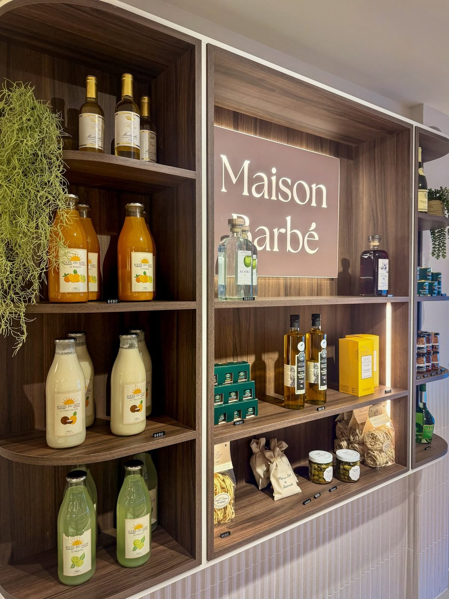

Au 43 rue du Maréchal Foch, en plein centre de Louviers, Sylvie et Patrice Barbé tiennent une charcuterie-traiteur artisanale où tout est fait maison. Après de gros travaux, la boutique a fait peau neuve : nouvelle devanture, nouvelle identité, même exigence du fait maison.
Le métier : tout faire soi-même
Chez les Barbé, le métier se résume en deux mots : fait maison. Pâtés, boudins, andouillettes, saucisses, plats à emporter : la charcuterie est préparée par la maison. Derrière le comptoir, c’est une affaire de famille, que Sylvie et Patrice font vivre au cœur de Louviers.
Une boutique entièrement modernisée
La Maison Barbé s’est offert une vraie transformation. De gros travaux ont permis de moderniser entièrement le magasin, avec une nouvelle devanture et une nouvelle identité aux tons or et taupe, élégante et chaleureuse. Le décor a changé, le savoir-faire est resté.

Quatre produits primés au Grand Prix d’excellence : le boudin blanc truffé au foie gras, le pâté en croûte au ris de veau et foie gras, l’andouillette et la saucisse créative.
— Une reconnaissance du savoir-faire de la maisonDu déjeuner sur le pouce au repas de mariage
Le midi, salariés et étudiants du centre-ville y trouvent des formules et des plats à emporter. Pour les grandes occasions, la maison prépare des buffets froids ou chauds, à emporter ou livrés : mariages, baptêmes, communions, anniversaires, mais aussi repas d’affaires, séminaires et cocktails pour les entreprises, à Louviers et dans les communes alentour.
Les bons plans de la maison
Des bons cadeaux pour faire plaisir aux gourmands, et des invendus du jour proposés à prix réduit sur l’application Too Good To Go : une façon intelligente de lutter contre le gaspillage.
Maison Barbé — Charcuterie du Parvis
43 rue du Maréchal Foch, 27400 Louviers · du mardi au samedi · 02 32 40 02 77